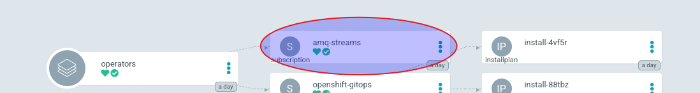

Operator
Installation
In this lab, we will install the AMQ Streams operator.
Prerequisites:
-
An OCP cluster
Goals:
-
Install operator
1. Lab10 - Installation
The operator will be deployed using the descriptor:
apiVersion: operators.coreos.com/v1alpha1
kind: Subscription
metadata:
name: amq-streams
namespace: openshift-operators
spec:
channel: amq-streams-2.3.x
installPlanApproval: Automatic
name: amq-streams
source: redhat-operators
sourceNamespace: openshift-marketplace
startingCSV: amqstreams.v2.3.0-2To apply the file, we will use the oc client to apply it on the namespace "openshift-operators".
oc apply -f operators/amq-streams-operator.yaml -n openshift-operators
Now, we will check the status of the operators:
oc get subscription -n openshift-operators NAMESPACE NAME PACKAGE SOURCE CHANNEL openshift-operators amq-streams amq-streams redhat-operators amq-streams-2.3.x
How we can see, the operator is installed and ready to be used.
If we have used the GitOps way, specifically ArgoCD, we will see this picture:
